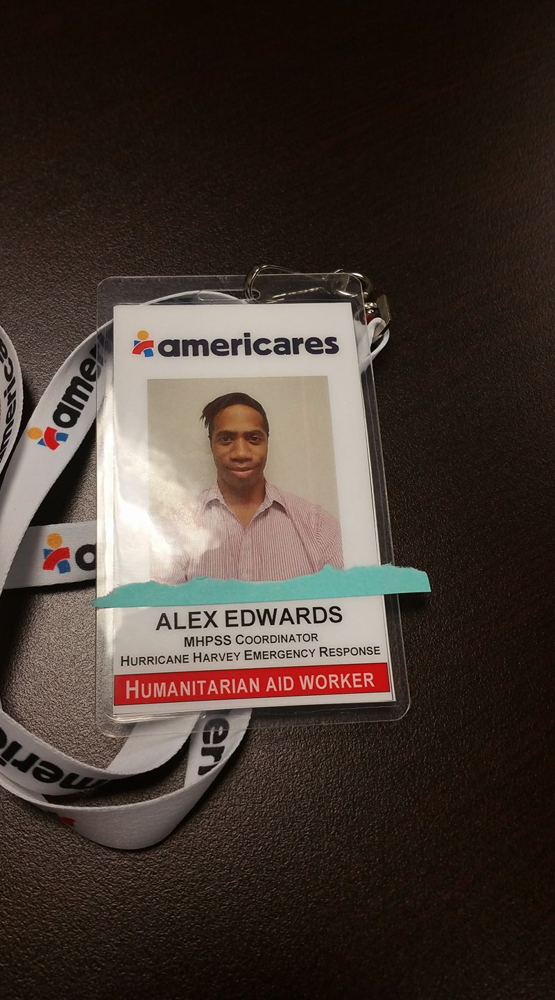

Hello, my name is Alex, and I am an up and coming web developer! I have spent many hours learning HTML, CSS, and JavaScirpt and would like to showcase my skills. I hope you enjoy my website. Before getting into tech, I worked in mental health for the past 10 years. My first eight years were spent serving in two different psychiatric facilities providing psychoeducational groups and individual sessions to those in need. In 2017, after hearing about the devasting effects of Hurricane Harvey on the Texas Gulf Coast I decided to join the Mental Health and Psychosocial Support team of Americares, and help the helpers as a disaster mental health worker.
From my time with Americares I learned about the importance of the tech side of disaster relief, and then decided to study on my own, and after much thought I decided to attend Flatiron School for their web development program.
With my mental health background, I want to help the tech industry to make better tools in order to meet the demand of the upcoming mental health needs of our ever-growing mental health-conscious society.